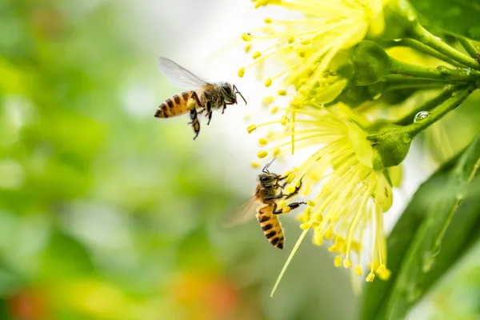

As abelhas são animais extremamente importantes para o meio ambiente, uma vez que são responsáveis pela polinização de diversas espécies de angiospermas. Fazem parte do grupo dos artrópodes, mais precisamente da classe dos insetos e da ordem Hymenoptera. Algumas espécies vivem em sociedade e apresentam organização de trabalho. Em uma colmeia, observamos a presença da rainha, do zangão e das operárias.